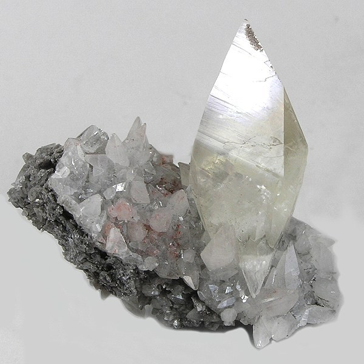
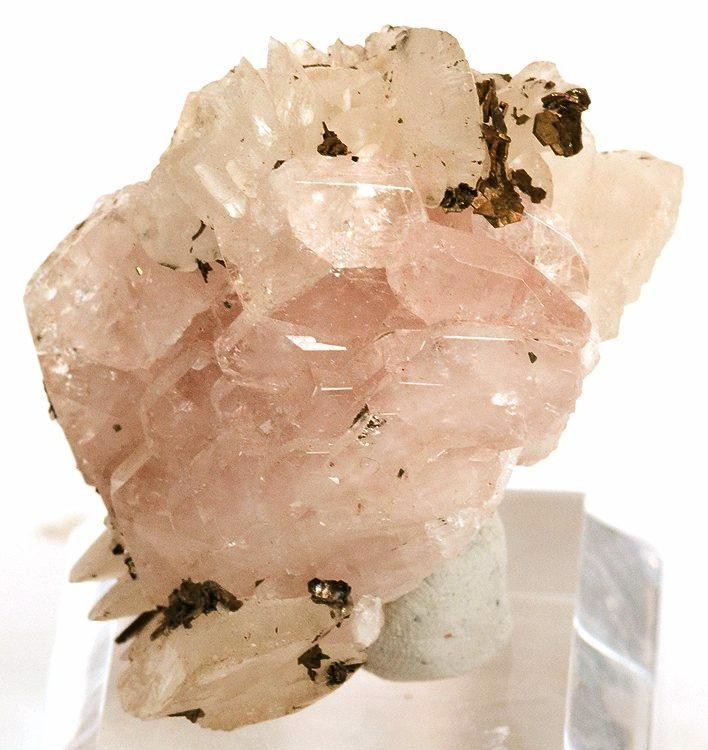
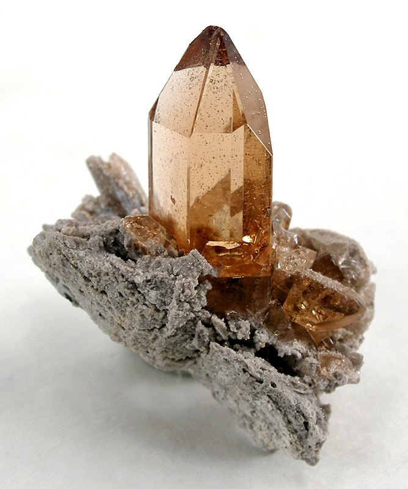
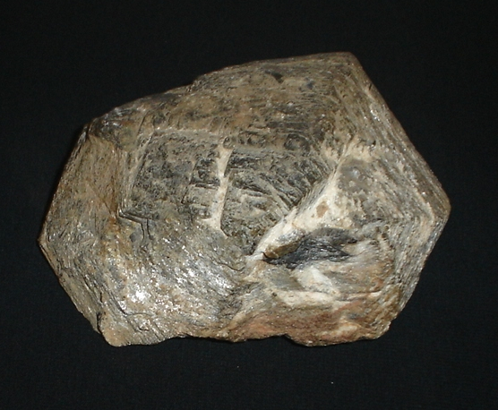

Tabla de Dureza de Mosh
| Dureza |
Mineral |
Se raya con / raya a |
Composición Química |
| 1 |
Talco  |
Se puede rallar fácilmente con la uña |
Mg3Si4O10(OH)2 |
| 2 |
Yeso  |
Se puede rallar con la uña con más dificultad |
CaSO42H2O |
| 3 |
Calcita  |
Se puede rallar con una moneda de cobre |
CaCO3 |
| 4 |
Fluorita  |
Se puede rallar con un cuchillo de acero |
CaF2 |
| 5 |
Apatito  |
Se puede rallar dificilmente con un cuchillo |
Ca5(PO4)3(OH-,CI-,F-)I |
| 6 |
Ortosa  |
Se puede rallar con una lija para el acero |
KAISi3O8 |
| 7 |
Cuarzo  |
Raya el vidrio |
SiO2 |
| 8 |
Topacio  |
Rayado por herramientas de carburo de wolframio |
Al2SiO4(OH-,F-)2 |
| 9 |
Corindón  |
Rayado por herramientas de carburo de silicio |
Al2O3 |
| 10 |
Diamante  |
El material más duro en esta escala (rayado por otro diamante) |
C |